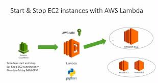

Stop and Start Amazon EC2 instances automatically using Lambda and CloudWatch to reduce my Amazon Elastic Compute Cloud (Amazon EC2) usage
{kind=link}
Step 1: Go to IAM service on AWS Console and create a IAM Role.

Step 2: Click Role.

Step 3: Click Create Role.

Step 4: Choose the lambda service.Click Next.

Step 5: Click Create Policy.

Step 6: Choose the view policy document editor as JSON and give the policy. Click Review Policy.

Step 7: Give the Tag Name. Click Create Policy.


Step 8: Role has been created as per the below.

Step 9: Go to the lambda service on AWS Console.

Step 10: Click Create a function.

Step 11: Choose Author from scratch.

Step 12: Enter the function Name as StopsEC2Instances and choose the Runtime as Python2.7 and select the exist IAM role that we created. Click Create function.

Step 13: Once created the function just scroll down and write the code and mention the instance id,region under the edit pane in the code editor to Stop the instance. Click Save

Step 14: You can understand that, I mentioned the below instance ID in above code editor.

Step 15: Repeat steps 10-12 to create another function to start your instance. So that function name should be as StartEC2Instances for your understanding and choose the same role we created previously.Here you write the different code into editor pane in the code editor for startup the instance. Click Save.

Step 16: Go to the lambda functions and choose one of the functions we created to test our lambda functions.

Step 17: Click Test.

Step 18: In the Configure test event dialog, choose Create new test event and Enter an Event name, and then choose Create. Click Create.
Note: You don't need to change the JSON code for the test event—the function doesn't use it.

Step 19: Again Click Test and you can see the below code was executed successfully.

Step 20: Go to CloudWatch service and Create a CloudWatch Events event that triggers a Lambda functions.

Step 21: Click Events.

Step 22: Click Get started.

Step 23:Under Event Source, choose Schedule and Cron expression and enter an expression that tells Lambda when to stop your instances.

Step 24: Under Targets, Click Add target and choose your lambda function. Click Configure details.

Step 25: Enter a name to identify the event and select Enabled check box. Click Create rule.

Step 26: Created one event that stops your EC2 instances and another event that starts them again using another rule. Follow the Step 20 to Step 25 to create a another rule for startup the instance.